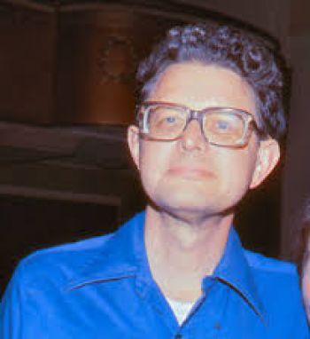

|

Poul William Anderson (November 25, 1926 – July 31, 2001) was an American science fiction author who began his career during the Golden Age of the genre and continued to write and remain popular into the 21st century. Anderson also authored several works of fantasy, historical novels, and a prodigious number of short stories. He received numerous awards for his writing, including seven Hugo Awards and three Nebula Awards.
Biography:
Poul Anderson was born on November 25, 1926, in Bristol, Pennsylvania, of Scandinavian parents. Shortly after his birth, his father, Anton Anderson, an engineer, moved the family to Texas, where they lived for over ten years. Following Anton Anderson's death, his widow took her children to Denmark. The family returned to the United States after the outbreak of World War II, settling eventually on a Minnesota farm. (The frame story of Three Hearts and Three Lions, before the fantasy part begins, is partly set in the pre-WWII Denmark which the young Anderson personally experienced.)
While he was an undergraduate student at the University of Minnesota, Anderson's first stories were published by John W. Campbell in Astounding Science Fiction: "Tomorrow's Children" by Anderson and F. N. Waldrop in March 1947 and a sequel, "Chain of Logic" by Anderson alone, in July. He earned his B.A. in physics with honors but made no serious attempt to work as a physicist; instead he became a free-lance writer after his graduation in 1948—and placed his third story in the December Astounding.
Anderson married Karen Kruse in 1953 and moved with her to the San Francisco Bay area. Their daughter Astrid (now married to science fiction author Greg Bear) was born in 1954. They made their home in Orinda, California. Over the years Poul gave many readings at The Other Change of Hobbit bookstore in Berkeley, and his wife later donated his typewriter and desk to the store. He died of cancer on July 31, 2001, after a month in the hospital. A few of his novels were first published posthumously.
Anderson was a founding member of the Society for Creative Anachronism in 1966 and of the Swordsmen and Sorcerers' Guild of America, also in the mid-1960s. The latter was a loose-knit group of Heroic Fantasy authors led by Lin Carter, originally eight in number, with entry by credentials as a fantasy writer alone. He was the sixth President of Science Fiction and Fantasy Writers of America, taking office in 1972.
Robert A. Heinlein dedicated his 1985 novel The Cat Who Walks Through Walls to Anderson and eight of the other members of the Citizens' Advisory Council on National Space Policy.
The Science Fiction Writers of America made him its 16th SFWA Grand Master in 1998[8] and the Science Fiction and Fantasy Hall of Fame inducted him in 2000, its fifth class of two deceased and two living writers.
|